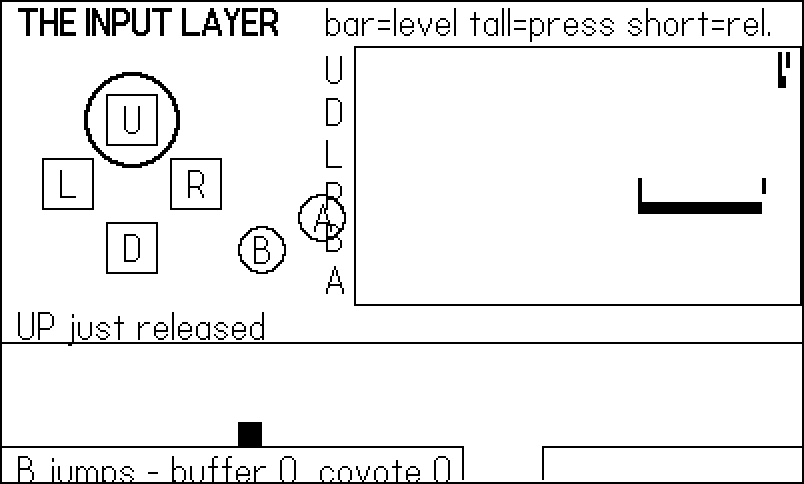
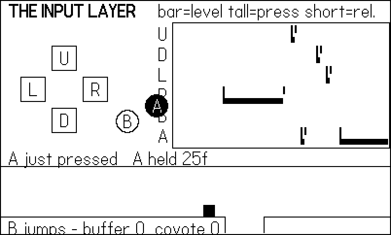
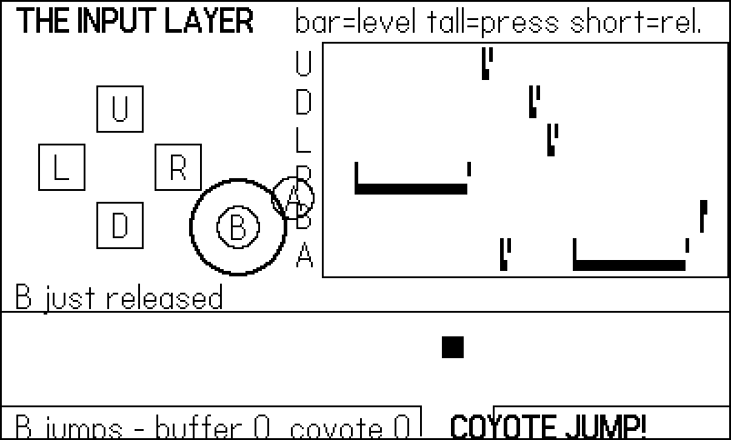
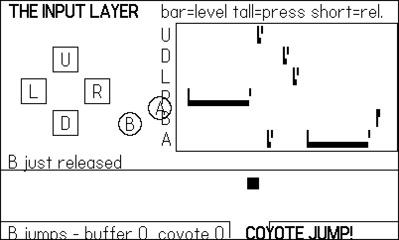
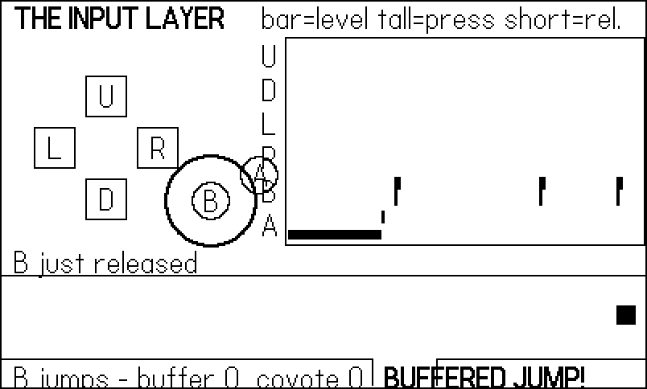

9 Buttons: The Input Layer
The Playdate gives you eight physical inputs: a four-way d-pad, two face buttons, a crank, and (buried in the console body) an accelerometer. This chapter is about the six buttons — not because they are complicated, but because how you read them decides how your whole game is structured. Get the input layer right and every later chapter gets easier: your game becomes testable by a robot, your controls become tunable in one file, and subtle feel problems like eaten jump presses simply stop happening.
The chapter’s example is an input visualizer: a set of on-screen lamps mirroring the real buttons, a logic-analyzer-style trace that separates level from edge — the one distinction that matters — and, along the bottom, a tiny auto-runner that demonstrates the two classic input-feel tricks, jump buffering and coyote time. The whole thing is driven by a scripted thumb rather than a human one, which is not a gimmick: it is the exact seam that all sixty of the shipped games in this book’s pedigree use for their autopilots, and the one Chapter 18 turns into a full test harness.
You will leave this chapter with a reusable Input.gather() module and a working intuition for when a button state is a fact (“A is down”) and when it is an event (“A went down”).
9.3 Seeing the difference
The example makes the distinction visible. Lamps on the left mirror the d-pad, B, and A; every press edge spawns an expanding ring around its lamp for eight frames. On the right, a trace scrolls the last 110 frames of history like a logic analyzer: a low bar while a button’s level is high, a full-height tick at each press edge, and a short tick at each release edge.
-- The trace: one column per remembered frame, newest at the right.
-- A short bar means "level high" (buttonIsPressed would be true);
-- a full-height tick marks the press edge; a half tick the release.
local function traceRow(row, name, y)
gfx.drawText(string.upper(string.sub(name, 1, 1)),
TRACE_X - 16, y + 2)
for i = 0, Game.HISTORY - 1 do
local slot = (Game.head - i - 1) % Game.HISTORY + 1
local s = Game.trace[slot]
if not s then break end
local x = TRACE_X + TRACE_W - 2 - i * 2
if s[name] then
gfx.fillRect(x, y + ROW_H - 8, 2, 6) -- level bar
end
if s[name .. "Just"] then
gfx.fillRect(x, y + 1, 2, ROW_H - 3) -- press tick
elseif s[name .. "Released"] then
gfx.fillRect(x, y + 1, 2, 8) -- release tick
end
end
endFigure 9.1 is the frame A went down: the lamp fills and the ring flares, and the caption line reports the edge. Twenty-six frames into a hold (Figure 9.2) the lamp is still lit — buttonIsPressed is still true — but there is no ring and no edge: buttonJustPressed returned true exactly once, back at the press.


The trace in Figure 9.3 tells the same story horizontally. Held right on the d-pad is a thirty-frame bar bracketed by one press tick and one release tick; the two-frame taps are almost all tick and no bar. When an input bug has you baffled, five minutes of building a trace like this one pays for itself — it turns “the jump sometimes doesn’t fire” into “the press edge lands on the frame we were still in the pause menu.”

buttonJustPressed — one edge each.
9.4 Polling versus input handlers
Everything above polls: each update asks the SDK for the state it cares about. The SDK also offers a push model, playdate.inputHandlers, in which you hand over a table of callbacks and the OS calls you:
-- anti-pattern for a game loop; fine for modal UI (see text)
local handlers = {
AButtonDown = function() Menu.confirm() end,
upButtonDown = function() Menu.move(-1) end,
downButtonDown = function() Menu.move(1) end,
cranked = function(change, accelChange)
Menu.scroll(change)
end,
}
playdate.inputHandlers.push(handlers, true)
-- ... later, when the menu closes:
playdate.inputHandlers.pop()A handler table is a plain Lua table — no subclassing — with any of the callbacks AButtonDown/AButtonHeld/AButtonUp (likewise for B), upButtonDown/upButtonUp (likewise for the other d-pad directions), and cranked(change, acceleratedChange). Handlers stack: push adds a table, pop removes it, and input propagates down the stack to the first table that defines a given callback. The second argument to push, masksPreviousHandlers, stops that propagation — pass true and any callback you didn’t define is simply dropped instead of falling through to the handlers (and the default playdate table) below.
That stacking is the feature. Input handlers are built for temporarily stealing focus: a pause overlay, a text prompt, a shop screen that must not leak d-pad presses into the game underneath. Push a masking handler when the overlay opens, pop it when it closes, and the game code under it needs no if menuOpen guards at all.
Walk the scenario through. Your game polls in playdate.update. The player opens your in-game shop; you push the shop’s handler table with masksPreviousHandlers = true. From that frame, the shop’s upButtonDown fires on d-pad presses, the callbacks you did not define are swallowed rather than falling through — and, crucially, the polling functions keep answering honestly, so a game loop that still calls buttonIsPressed will see presses the handler already acted on. That is the one integration trap: the two models do not lock each other out. If you mix them, gate your polling on “is anything pushed above me,” or better, do not mix them — pause your simulation while an overlay owns the stack, and resume it on pop.
For the core game loop, though, the sixty shipped games this book draws on poll — every one of them. Two reasons. First, determinism: a poll happens at a known point in your frame, so game logic sees one coherent input state; callbacks arrive whenever the OS pleases, which invites half-updated-state bugs. Second, and decisive for this book: a polling loop has one narrow place where input enters the game, and one narrow place is exactly what you need to replace a human with a script.
Both models sample between updates. If your game dips below its target frame rate, a fast tap can go down and up inside one long frame — buttonJustPressed still catches that (the press is latched for the next update), but two taps in one frame collapse into one. If that matters (rhythm games, mash mechanics), see playdate.setButtonQueueSize(size), which queues button events instead of coalescing them. At a steady 30 fps you will not need it.
9.5 One snapshot per frame: Input.gather()
Here is the pattern the whole book builds on. The example’s input.lua maps logical names to buttons:
local pd <const> = playdate
-- logical name -> SDK button constant
local MAP <const> = {
up = pd.kButtonUp,
down = pd.kButtonDown,
left = pd.kButtonLeft,
right = pd.kButtonRight,
b = pd.kButtonB,
a = pd.kButtonA,
}and exposes a single function that produces one snapshot table per frame:
-- Returns one table per frame: for each button, its level state
-- (`s.a`), its press edge (`s.aJust`), and its release edge
-- (`s.aReleased`).
function Input.gather(frame)
local bot = Harness.input(frame) -- nil for human play
local s = {}
for name, button in pairs(MAP) do
if bot then
s[name] = bot[name] or false
else
s[name] = pd.buttonIsPressed(button)
end
-- edge = level now, and not level a frame ago
s[name .. "Just"] = s[name] and not prev[name]
s[name .. "Released"] = prev[name] and not s[name]
prev[name] = s[name]
end
return s
endRead the first line again, because it is the most important line in the chapter: Harness.input(frame) returns a table of synthetic button levels when a script is driving (in this book’s builds, the shots.lua figure script; in a shipped game, an autopilot), and nil when a human is playing. The bot is consulted first, and it feeds the same fields the human path fills. Everything downstream — game logic, the visualizer, the runner — consumes the snapshot and cannot tell the difference.
Note what the snapshot does about edges: it derives them, level now and not level last frame. For a human we could have called buttonJustPressed instead — it computes exactly that — but the bot only supplies levels, and deriving edges in one place means scripted input gets aJust for free. That is the entire mechanism by which a ten-line figure script can “press” buttons.
The game loop then consumes the snapshot:
function playdate.update()
local s = Input.gather(frame) -- ONE snapshot per frame
Game.update(s)
Runner.update(s)
Draw.frame(s)
endThree properties make this pattern worth the small ceremony:
- One read per frame. Every consumer sees the same input; no mode handler can double-handle an edge another already consumed, and no code path reads a button the frame after another path acted on it.
- One vocabulary. Game code says
s.aJust, notplaydate.buttonJustPressed(playdate.kButtonA). Rebinding controls (or supporting both B-jump and A-jump) is a one-file edit. - One injection point. A test script, a demo-mode attract loop, and a debugging “replay last 300 frames” tool are all the same five lines.
This is the seam Chapter 18 drives a truck through: the harness that captured every figure in this book is nothing more than a Harness.input that reads from a script instead of returning nil.
9.5.1 Case study: Clam Jumper’s input table
Clam Jumper — a port of the 1982 arcade game Claim Jumper to an ocean floor — needs both kinds of button read on the same button, which makes its Input.gather a compact tour of everything above:
-- clamjumper/source/input.lua:15
if playdate.buttonIsPressed(playdate.kButtonLeft) then mvx = -1 end
if playdate.buttonIsPressed(playdate.kButtonRight) then mvx = 1 end
if playdate.buttonIsPressed(playdate.kButtonUp) then mvy = -1 end
if playdate.buttonIsPressed(playdate.kButtonDown) then mvy = 1 end
-- one axis at a time on a grid; vertical wins ties
if mvy ~= 0 then mvx = 0 end
return {
mvx = mvx, mvy = mvy,
ability = playdate.buttonJustPressed(playdate.kButtonA),
abilityHeld = playdate.buttonIsPressed(playdate.kButtonA),
crank = playdate.getCrankChange(),
}
endMovement is levels, collapsed to a grid direction. The species ability is two fields from one button: ability is the edge (the sea star’s clamp and the octopus’s dash trigger once), while abilityHeld is the level (the ray keeps gliding only while A stays down). And directly above this code — lines 11–13 of the file — sits the seam: if Harness.enabled and Harness.autopilot then return Harness.autopilot() end. The autopilot that smoke-tested all three species returns this same table shape, ability edges and all, exactly as our bot does.
The same file holds one more pattern worth stealing: alongside the main Input.gather(), it exports tiny per-context helpers — Input.confirm() for “advance this screen” and Input.menuLR() for the species-select cursor. Title screens and menus want a different, smaller vocabulary than gameplay, and giving them their own two-line functions keeps the gameplay snapshot from growing confirm/menuMove fields that only matter two seconds per session. Note that Input.confirm() carries its own bot branch (if Harness.enabled then return G.t > 0.7 end — “the bot confirms any screen after 0.7 seconds”), so even the title screen is scriptable. Every input entry point gets a seam, or the robot gets stuck at the first “PRESS A” it meets.
9.6 Buffering and coyote time
Edges give you correct input. Two small tricks give you kind input. Both live in the runner strip along the bottom of the example, and both are forgiveness windows measured in frames:
- Input buffering: the player presses jump a few frames before landing. A literal engine drops the press — the character was airborne, jumping was illegal — and the player swears they pressed the button. A buffered engine remembers the press briefly and fires it the instant landing makes it legal.
- Coyote time: the player presses jump a few frames after running off a ledge, like Wile E. Coyote treading air. A literal engine says “not grounded, no jump” and the player falls, cheated. A forgiving engine keeps the jump legal for a handful of frames past the edge.
The implementation is two countdown timers:
local FLOOR <const> = 222 -- resting bottom edge, in pixels
local GAP_L <const> = 230 -- the pit in the floor
local GAP_R <const> = 270
local BUFFER <const> = 6 -- frames a too-early press is remembered
local COYOTE <const> = 6 -- frames of grace after leaving a ledge
function Runner.reset()
Runner.x, Runner.y = 20, FLOOR -- y is the runner's bottom edge
Runner.vy = 0
Runner.bufferT = 0 -- press stored while airborne
Runner.coyoteT = 0 -- grace left after walking off the ledge
Runner.label, Runner.labelT = nil, 0
end
local function overGap(x)
local cx = x + 6 -- runner is 12 px wide; support at the centre
return cx > GAP_L and cx < GAP_R
end
local function jump(label)
Runner.vy = -5.5
Runner.bufferT, Runner.coyoteT = 0, 0
Runner.label, Runner.labelT = label, 30
Harness.count(label)
end
function Runner.update(s)
if Runner.bufferT > 0 then Runner.bufferT = Runner.bufferT - 1 end
if Runner.coyoteT > 0 then Runner.coyoteT = Runner.coyoteT - 1 end
if Runner.labelT > 0 then Runner.labelT = Runner.labelT - 1 end
local wasGrounded = Runner.y >= FLOOR and not overGap(Runner.x)
-- the jump button: act now, or remember the press
if s.bJust then
if wasGrounded then
jump("jump")
elseif Runner.coyoteT > 0 then
jump("coyote jump") -- just off the ledge: allow it
else
Runner.bufferT = BUFFER -- too early: queue the press
end
end
Runner.x = Runner.x + 2
if Runner.x > 400 then Runner.x = Runner.x - 400 end
Runner.vy = Runner.vy + 0.4
Runner.y = Runner.y + Runner.vy
if Runner.y >= FLOOR and not overGap(Runner.x) then
if Runner.vy > 0 then
Runner.y, Runner.vy = FLOOR, 0 -- landed
if Runner.bufferT > 0 then
jump("buffered jump") -- flush the queue
end
end
elseif wasGrounded and Runner.vy > 0 then
Runner.coyoteT = COYOTE -- walked off (not a jump): grace
end
if Runner.y > 260 then -- fell into the pit: back to the start
Runner.x, Runner.y, Runner.vy = 20, FLOOR, 0
Harness.count("falls")
end
endWalk through the press branch. On a bJust edge: if grounded, jump — the normal case. If airborne but the coyote clock is still running, jump anyway; the clock only starts when the runner walks off a ledge (the wasGrounded and vy > 0 branch — a jump must not grant a second jump). Otherwise the press was genuinely too early, so it is remembered in bufferT instead of dropped, and the landing code flushes it. Six frames is a fifth of a second at 30 fps: generous enough to absorb human timing error, tight enough that nobody perceives the game acting on its own.
Figure 9.4 catches the coyote case: the runner is over the pit, already past the ledge, and the jump still fired. Figure 9.5 is the buffered press: B went down four frames before touchdown (you can find the tick on the trace), and the runner is rising again on the very frame it landed.


Clear both timers whenever a jump fires (jump() zeroes them above). If you forget, a buffered press can fire on landing and leave a live coyote window, letting a pressed-once player jump twice. Symmetrically, only start the coyote clock on a walk-off — gating it on vy > 0 with wasGrounded is what stops a rising jump from re-arming it.
How wide should the windows be? There is no universal number, but the shipped games cluster tightly, and the reasoning generalizes:
| Window | Frames at 30 fps | Why |
|---|---|---|
| Jump buffer | 4–8 | absorbs thumb-early error; above ~10 the game visibly acts “on its own” |
| Coyote time | 4–8 | covers the eye’s lag noticing the ledge; above ~10 jumps look airborne |
| Hold-vs-tap split | 8–12 | below ~8, deliberate taps register as holds |
Tune them as <const> frame counts, not seconds — they are feel constants pinned to your fixed 30 fps timestep, and expressing them in frames keeps them honest when you read a trace. And if a tester says your jump “feels unresponsive” while your input code is provably correct, widen these before touching anything else; nine times out of ten the physics is fine and the forgiveness is missing.
Neither trick requires the snapshot pattern, but notice how cheap they became on top of it: Runner.update(s) reads s.bJust and never touches the SDK, so the scripted thumb in shots.lua exercised both forgiveness windows — and the figures prove they work — without the Simulator’s keyboard ever being touched.
9.7 The scripted thumb
For completeness, here is the entire script that drove every figure in this chapter — the Shots table’s script function is called once per frame and returns the bot table that Input.gather reads:
-- Figure script: a scripted thumb. Holds and taps paint the trace,
-- then B exercises the runner: a coyote jump off the ledge at 105,
-- a plain jump at 150, and a press at 174 that lands in the buffer
-- window and fires on touchdown at ~177.
Shots = {
seed = 1,
last = 240,
shots = {
["input-edge"] = 50, -- A's press frame: lamp + blip
["input-held"] = 95, -- A held 26 frames: lamp, no blip
["input-trace"] = 112, -- the full level-vs-edge timeline
["input-coyote"] = 115, -- mid-air over the pit, label up
["input-buffer"] = 182, -- rising off the buffered press
},
script = function(f)
return {
right = f >= 10 and f <= 40,
up = f >= 45 and f <= 46,
down = f >= 58 and f <= 59,
left = f >= 63 and f <= 64,
a = (f >= 50 and f <= 51)
or (f >= 70 and f <= 100),
b = f == 105 or f == 150 or f == 174,
}
end,
}Holds are frame ranges, taps are one- or two-frame ranges, and the three B presses at 105, 150, and 174 are aimed at the runner: one inside the coyote window just past the ledge, one plain jump on flat ground, and one four frames before a landing so it buffers.
Aiming a press at frame 174 only works because the whole run is deterministic: the RNG is seeded (seed = 1), the script is indexed by frame number rather than wall-clock time, and the runner’s physics is a pure function of its inputs. That discipline is why the harness can run the game unthrottled — hundreds of frames a second — and the presses still land on the same frames. Determinism is also what makes the counters meaningful: the code in this chapter calls Harness.count("coyote jump") and friends at each interesting event, and the harness folds those tallies into a heartbeat file a test script can grep.
When you build your own games on this pattern (and Chapter 18 will insist), scripts like this become your regression suite: if a refactor breaks coyote time, the "coyote jump" counter drops to zero on the next scripted run and the failure is caught before any human notices anything. The shipped games learned to count everything — shots, kills, deaths, mode changes — because a missing counter in the heartbeat is the fastest bug signal there is.
9.8 What you know now
buttonIsPressedreads a level (continuous actions);buttonJustPressed/buttonJustReleasedread an edge (discrete actions). An edge is just “level now, not level last frame.”- The six
playdate.kButton*constants name the buttons;getButtonState()returns all of them as bitmasks. playdate.inputHandlers.push/popis a callback stack made for modal focus-stealing; the game loop itself should poll.Input.gather()builds one snapshot table per frame, with the bot consulted first — the injection seam every shipped game uses and Chapter 18 industrializes.- Jump buffering remembers early presses; coyote time honors late ones; both are little countdown timers, and both must be cleared when the jump fires.
Next: the input device no other handheld has. The crank gets a chapter of its own — absolute position, deltas, detents, and the catalog of mappings that sixty games proved fun.